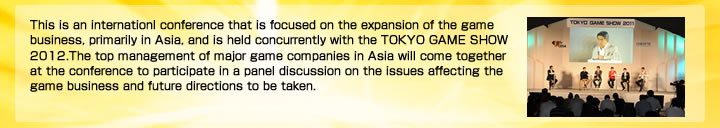

| Subject | A New Era of Boundary-less Social and Mobile Games?! What Game Businesses Will Survive in Asia? In the past, each region of Asia had its own rules for game businesses, and the markets never mixed. However, with the spread of smartphones, tablets, and other portable devices, the amount of game software and the number of game services that operate on those platforms has increased at a tremendous rate, further blurring “borders.” Participants will discuss what mutual understanding is required, what should be given attention, and other such issues, with a focus on the rapidly globalizing social game and smartphone game areas.Discussion Topics (planned) 1. Analyzing Trends in the Mobile Game and Social Game Markets in Asia Participants will explain and analyze trends in mobile and social games in Japan, South Korea, China, and Indonesia. 2.“Market Differences” Learned by Entering Local Markets Participants will consider the variety of differences not only in language, but in culture, religion, lifestyle, etc., that have become apparent through games. 3.The Future of Game Businesses Can a common business infrastructure be used throughout Asia for social and mobile games? Participants will consider the vision for 3 years in the future. * Please note that the panelists, discussion content, companies represented, and timeframe are subject to change. |
|---|---|
| Panelist and companies represented (planned) |
China
Chuan He Senior Vice President, Renren Inc. CEO (Representative Executive Officer), Renren Games Japan
Indonesia
Shieny Aprilia COO, Agate Studio
South Korea
Chae Yoo Ra Director, Smartphone Game Business Operation Division NHN Hangame
Japan
Kenji Kobayashi Director, DeNA Co., Ltd. Moderator:Naoki Asami, Operating Officer , Publisher of Nikkei Business |
- "Asia Game Business Summit" is open to those who have not been admitted to the Tokyo Game Show 2012.
- Plese bring the completed application form and your business card with you to Asia Game Business Summit Counter of Hall 8 in Makuhari Messe at September 20.
- Admission to the Tokyo Game Show exhibition hall is limited to individuals who have registered in advance and passed screening (advance registration: \5,000; tax included) and individuals with “Business Day Registration Tickets” (free of charge; advance registration required). Advance registration for the Asia Game Business Summit (free of charge) alone will not provide admission to the TGS exhibition hall.
- Please note that the panelist, dicussion content, companies represented, and timeframe are subject to change.
- English, Chinese, Korean and Japanese simultaneous interpretation will be offered at the venue.